一波三折的真菌調查行
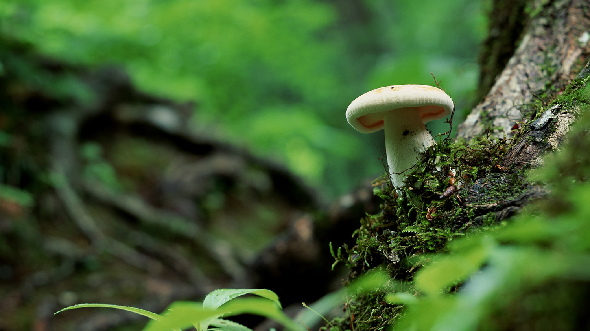今天終於可以開始工作了！為了避免在蘭嶼的艷陽與高溫下工作，我們一早6點多出發，前往紅頭森林步道，六人分頭沿著步道進行採集，雖然前幾天才下過雨，但森林中的真菌出菇情形不如預期中的多，僅發現零星軟菇類與多孔菌類真菌。然而在森林中進行採集工作時還是要注意安全，我們其中一位成員在專注採集時，ㄧ轉身看到一條大蛇，其他成員也發現了幼蛇掛在樹叢上。於此區採集至下午1點，下午繼續前往永興農場採集，因我們人數與採集工具較多而以汽車前往，但永興農場道路狹窄會車不易，稍微受到當地居民的抱怨，抵達後分散進入林中採集，與紅頭森林的原始林相不同，此區過去有開墾過，所以是林相為次生林，菇況也不如預期。在接近傍晚時，我們前往青青草原繼續工作，此區為蘭嶼著名景點之一，但我們的目的不是觀光，而是去撿拾羊糞，看看是否能重其中培養出糞生真菌，當遊客開始聚集至此準備看夕陽時，我們便離開了。會到民宿後，當天的工作尚未完成，必須處理當天採集的標本，將標本取出製作孢子印或分離菌株，因為目前工作站尚未成立，我們只能在房間利用現有的空間處理標本，處理完後已經晚上，才去附近的便利商店覓食吃晚餐。
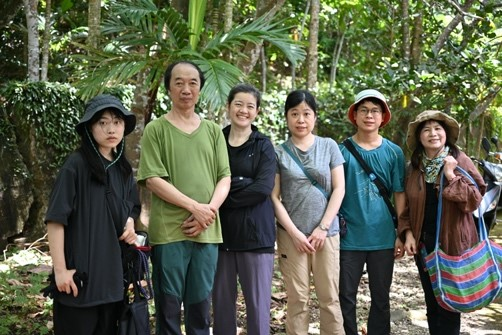
圖1、於紅頭森林步道工作後之合照。
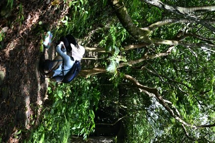
我們一早6點多出發，前往紅頭森林步道，六人分頭沿著步道進行採集，雖然前幾天才下過雨，但森林中的真菌出菇情形不如預期中的多，僅發現零星軟菇類與多孔菌類真菌。然而在森林中進行採集工作時還是要注意安全，我們其中一位成員在專注採集時，ㄧ轉身看到一條大蛇，其他成員也發現了幼蛇掛在樹叢上。於此區採集至下午1點，下午繼續前往永興農場採集，因我們人數與採集工具較多而以汽車前往，但永興農場道路狹窄會車不易，稍微受到當地居民的抱怨，抵達後分散進入林中採集，與紅頭森林的原始林相不同，此區過去有開墾過，所以是林相為次生林，菇況也不如預期。在接近傍晚時，我們前往青青草原繼續工作，此區為蘭嶼著名景點之一，但我們的目的不是觀光，而是去撿拾羊糞，看看是否能重其中培養出糞生真菌，當遊客開始聚集至此準備看夕陽時，我們便離開了。會到民宿後，當天的工作尚未完成，必須處理當天採集的標本，將標本取出製作孢子印或分離菌株，因為目前工作站尚未成立，我們只能在房間利用現有的空間處理標本，處理完後已經晚上，才去附近的便利商店覓食吃晚餐。
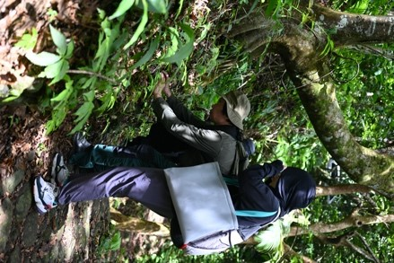
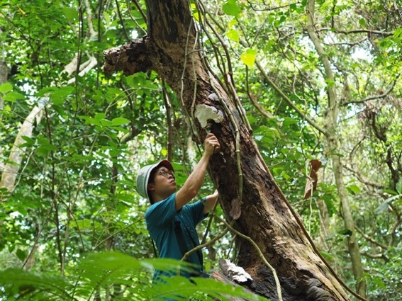今天終於可以開始工作了！為了避免在蘭嶼的艷陽與高溫下工作，我們一早6點多出發，前往紅頭森林步道，六人分頭沿著步道
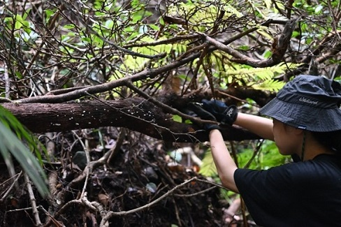
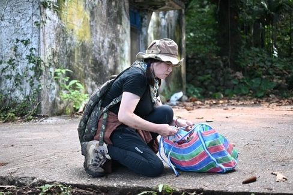
圖2、首日調查工作情形
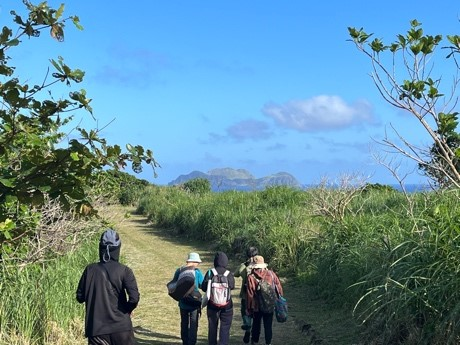
圖3、前往青青草原的途中
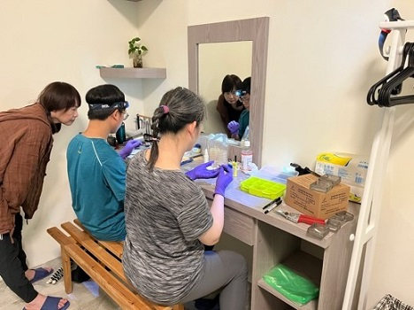
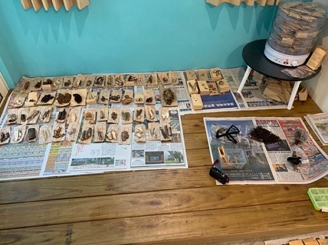
圖4、回到民宿後製作孢子印、菌株分離與烘乾標本等處理工作。
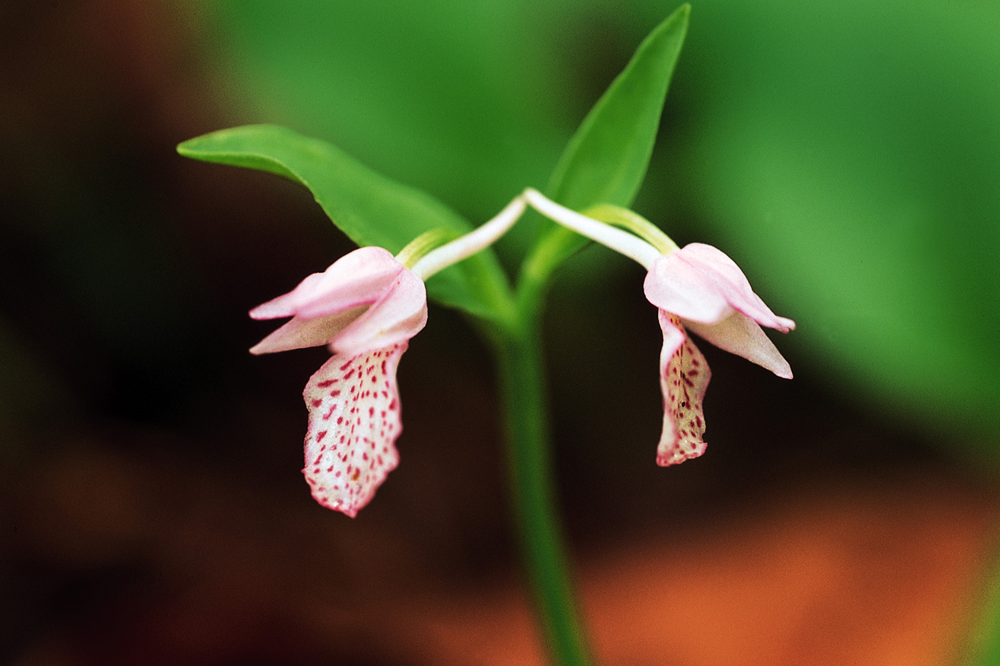